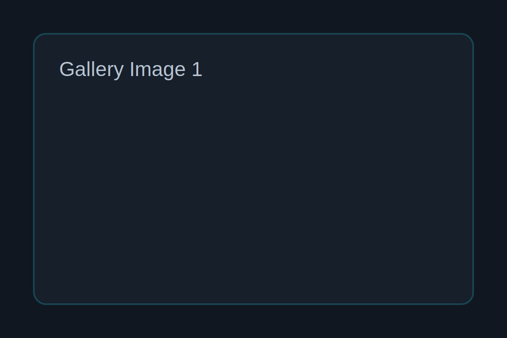
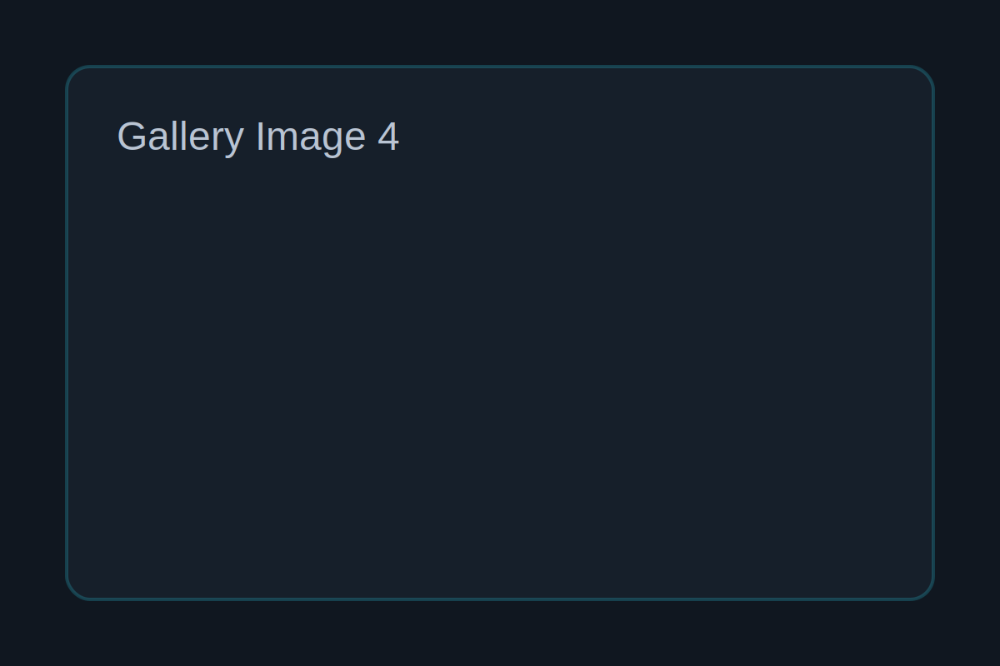
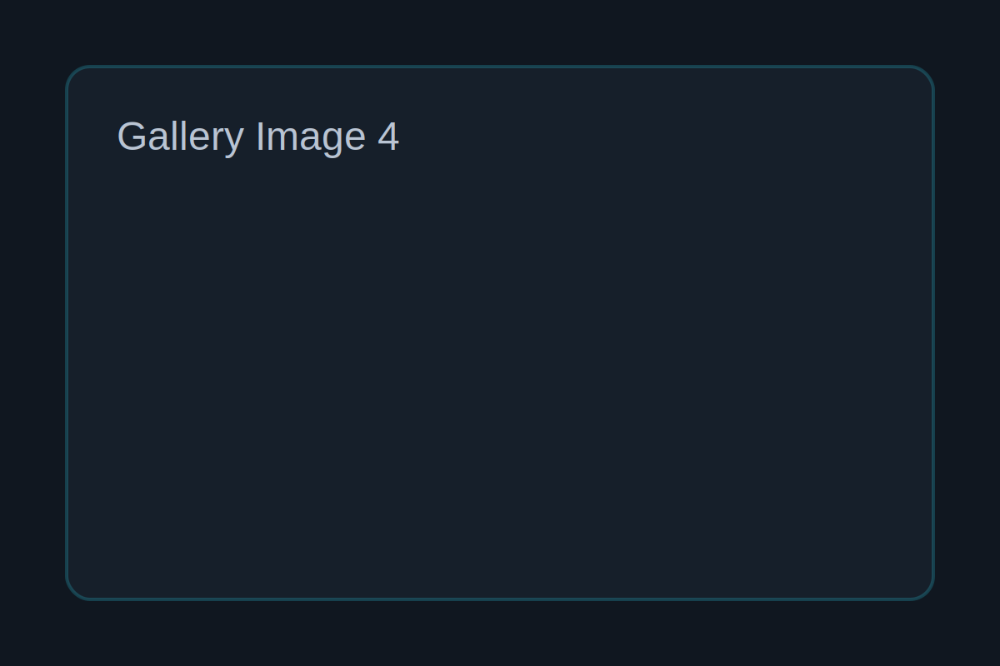
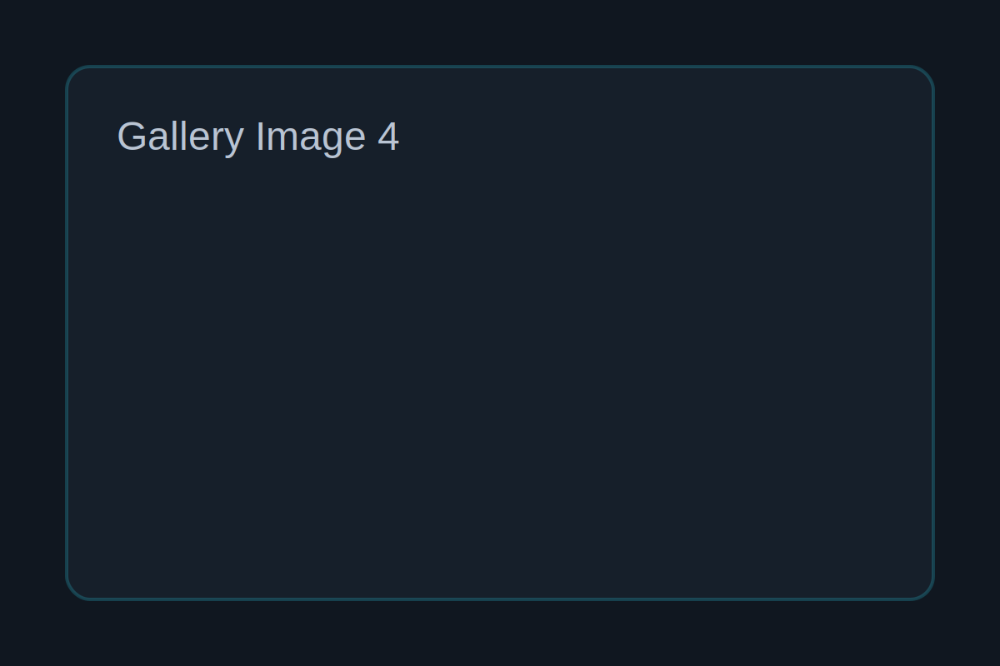

 


Project Overview
Our client was originally using a static wordpress website to showcase their school and other required information. My team and I supplied them with a modern, responsive website built with HTML, CSS, and JavaScript.
Highlights
- Requirements gathering from stakeholders through workshop and one to one meeting.
- Utilized AI assistants such as Github, Copilot and ChatGPT.
- Managed evolving client requirement via change control process.
- Participated in multiple sprint reviews and provided progress reports.
- Assisted with task-tracking.
- Made website performance improvements.
- Recreated the UI/UX development and feature implementation.
- Implemented dynamic features and tested system functionality.
- Gained practical experience using Git, team-based coding, and iterative development.
- Prepared Front-End and Back-End user manuals.
- Acted as Team leader whenever our leader has other commitments.
- Replaced the original WordPress website with a fully functioning react-based website.